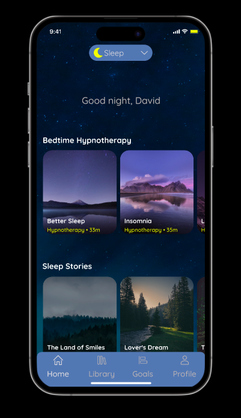

The Moon App
Our sleep app aims to help users to get regular sleeping habits.
We will provide them with relaxing videos, musics and giving user the option to create their own sleep
routines and tracking their sleeping hours.
By ensuring that these features are avaliable, the users will reduce their anxiety, stress and improve their sleep quality.
Watch the prototype
Wax in The City
Wax in the City app's goal is supplying the benefit of more satisfied users,
through adding a book option so users can easily find available time ,
prices, content of the service and payment options.
.
Watch the prototype
Central Optic
Central Optic stands for eyewear buyers and they need to be able to see
products online and try on products in
person (without going to the store) to see if the glasses fits them. At this point our web page's 3D try-on feature meets their needs.
.
Watch the prototype